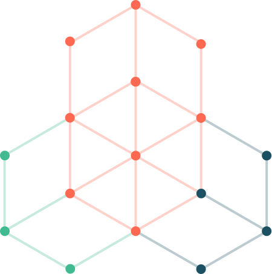
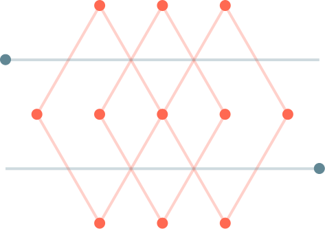
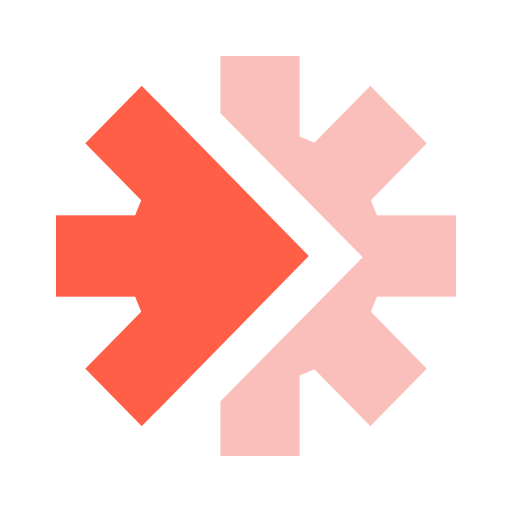
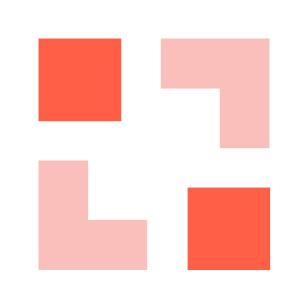
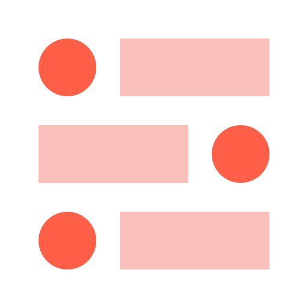

Pop Mart · Databricks Asset Bundles
A complete CI/CD demo — Lakeflow Declarative Pipeline, Lakeflow Job, GitHub Actions, and environment-aware deployments, built on Databricks Asset Bundles.
by the numbers
the stack
One repository is the source of truth for every Databricks resource — the pipeline, the job, the notebook, and the CI/CD workflows.

AMER trade orders medallion — Bronze sources in popmart.default transformed through Silver and published to Gold in popmart-prod. Serverless, Photon-accelerated, triggered mode.

Task 1 triggers the DLT pipeline. Task 2 runs a post-pipeline report notebook on serverless compute that validates Gold row counts and prints DQ expectation metrics.
resources/job.yml
Queries Gold tables and system.lakeflow after each run. Validates counts, checks expectation pass rates, and surfaces any tables with issues — all parameterised by the job.
On every pull request: bundle validate -t dev catches YAML errors, missing references, and schema violations before any code lands on main. Followed by pytest unit tests.
On merge to main: auto-deploy to dev, then pause at a GitHub Environment gate requiring a named reviewer to approve before the prod deployment can proceed.
.github/workflows/deploy.ymlPublic repo at darrenwee96/popmart-dab-cicd. Five tests verify pipeline SQL integrity — correct file, Gold views present, Silver views, decimal precision fix, and source table references.
automation
Every merge to main kicks off this sequence automatically. No one touches the workspace UI.
GitHub Actions · deploy.yml
data pipeline
The AMER trade orders pipeline reads from StarRocks-ingested Bronze tables and publishes clean, aggregated Gold materialized views for Genie and dashboards.
environment strategy
Both targets deploy to the same workspace. mode: development auto-prefixes every resource so dev and prod never collide.
[dev darren_wee]popmart.popmart_medallionroot_path — one canonical copypopmart-prod.popmart_medalliondeveloper workflow
Every developer gets an isolated copy of the pipeline — no coordinator, no shared dev environment, no collisions.
repo structure
Source code, resource definitions, tests, and deployment workflows — all versioned together in darrenwee96/popmart-dab-cicd.